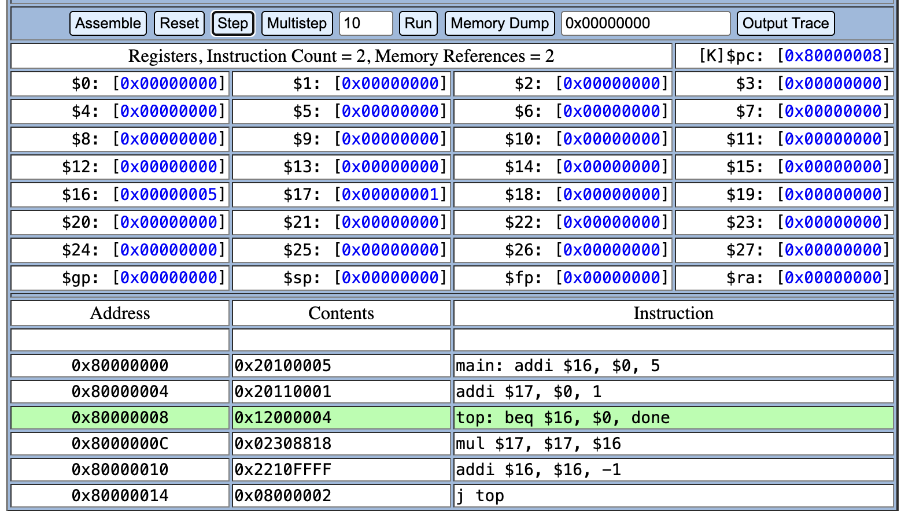

Lab 3: Assembly Language Translation
Computer Architecture I - CENG 351
Lab Partners:
Partner 1: Gabriel Giancarlo - Assembly simulation, code translation, report writing
Partner 2: Jun Yi - Code testing, screenshot capture, verification
Assembly Program Analysis
PDF Reference: This section corresponds to Step 2 of the Lab 3 instructions - "Enter in your assembly" program into the MIPS simulator.
Original Assembly Code:
# MIPS Assembly Program - Factorial Calculation
# Calculates 5! = 120
main: addi $16,$0,5 # Initialize counter to 5
addi $17,$0,1 # Initialize result to 1
top: beq $16,$0,done # Branch if counter equals 0
mul $17,$17,$16 # Multiply result by counter
addi $16,$16,-1 # Decrement counter
j top # Jump back to top
done: sw $17,0x1234($0) # Store result in memory
Register Mapping:
$0 - Zero register (always contains 0)$16 - Counter variable (n in high-level code)$17 - Result accumulator (result in high-level code)
Program Execution Screenshots
PDF Reference: This section corresponds to Steps 3-7 of the Lab 3 instructions - "Assemble", "Step" through instructions, observe register changes, and capture memory dump.
|
|
|
|
| 1 |
Step 2 - "Enter in your assembly" program |
Initial program setup showing assembly code entered into MIPS simulator before assembly |
|
|
|
|
| 2 |
Step 4 - "Step" through individual instructions |
Program execution in progress showing register values changing during the loop |
|

|
|
|
| 3 |
Step 6 - "Watch how the values change as the program executes" |
Final register values showing $16=0, $17=120 (5! = 120) |
|
|
|
|
| 4 |
Step 7 - "Memory Dump" button to see contents at address 0x1234 |
Memory dump showing final value (120) stored at memory address 0x1234 |
|
|
|
|
| 5 |
Step 5 - "Assembly instructions are translated to machine language" |
Machine language instructions showing hex machine code and memory addresses |
High-Level Code Translation
PDF Reference: This section corresponds to the "High-level translation" section of the Lab 3 instructions - "write a short code snippet in a high-level language" that represents the assembly program.
Code Files Location: All high-level code implementations are available in the Code/ directory:
Code/factorial.c - Original C implementation (5!)Code/factorial.cpp - C++ implementation (5!)Code/factorial_modified.c - Modified C implementation (3!)
C Code Equivalent:
// Lab 3: Assembly Language Translation
// High-level C code equivalent to MIPS assembly program
#include <stdio.h>
int main() {
// Register mapping:
// $16 = n (counter variable)
// $17 = result (accumulator for factorial)
int n = 5; // $16 - corresponds to "addi $16,$0,5"
int result = 1; // $17 - corresponds to "addi $17,$0,1"
printf("Calculating factorial of %d\n", n);
// Main loop - corresponds to the "top:" label in assembly
while (n > 0) { // corresponds to "beq $16,$0,done"
result = result * n; // corresponds to "mul $17,$17,$16"
n = n - 1; // corresponds to "addi $16,$16,-1"
}
printf("Final result: %d\n", result);
return 0;
}
C++ Code Equivalent:
// Lab 3: Assembly Language Translation
// High-level C++ code equivalent to MIPS assembly program
#include <iostream>
using namespace std;
int main() {
int n = 5; // $16 - corresponds to "addi $16,$0,5"
int result = 1; // $17 - corresponds to "addi $17,$0,1"
cout << "Calculating factorial of " << n << endl;
while (n > 0) {
result = result * n;
n = n - 1;
}
cout << "Final result: " << result << endl;
return 0;
}
3. Modified Version
Modified Assembly Code:
main: addi $16,$0,3 # MODIFIED: Initialize counter to 3
addi $17,$0,1 # Initialize result to 1
top: beq $16,$0,done # Branch if counter equals 0
mul $17,$17,$16 # Multiply result by counter
addi $16,$16,-1 # Decrement counter
j top # Jump back to top
done: sw $17,0x1234($0) # Store result in memory
Modified C Code:
#include <stdio.h>
int main() {
int n = 3; // MODIFIED: was 5, now 3
int result = 1; // $17 - corresponds to "addi $17,$0,1"
printf("Calculating factorial of %d\n", n);
while (n > 0) {
result = result * n;
n = n - 1;
}
printf("Final result: %d\n", result);
return 0;
}
Modified Program Execution Screenshots:
Modified version screenshots showing 3! calculation:
- Modified assembly code in simulator (changed from 5 to 3)
- Final register values ($16=0, $17=6)
- Memory dump of address 0x1234 (showing value 6)
Note: The modified version demonstrates how changing the initial value from 5 to 3 in the assembly code (addi $16,$0,3) results in calculating 3! = 6 instead of 5! = 120. This shows the direct correspondence between high-level code changes and assembly modifications.
❓ Lab Questions and Answers
üìñ PDF Reference: This section answers the specific "Lab questions" from the Lab 3 instructions.
❓ Question 1: Answers to steps 6 and 8 of assembly simulation
PDF Reference: Step 6 - "What values are stored in the PC?" and Step 8 - "Try to understand what the program is doing"
Step 6 - PC Values: The PC (Program Counter) values observed were:
0x80000000 - Start of program (main label)0x80000004 - Second instruction0x80000008 - Loop start (top label)0x8000000C, 0x80000010, 0x80000014 - Loop instructions0x80000018 - Final store instruction
The PC increments by 4 bytes (one word) for each instruction, except when jumping back to the loop start.
Step 8 - Program Understanding: The program calculates the factorial of 5. It uses a loop that multiplies the result by the counter and decrements the counter until it reaches 0. The final result (120) is stored in memory location 0x1234.
❓ Question 2: What is this assembly program doing?
PDF Reference: "In plain English, what is this assembly program doing?"
In plain English: This assembly program calculates the factorial of 5 (5!). It starts with a counter set to 5 and a result set to 1. It then enters a loop where it multiplies the result by the counter, decrements the counter by 1, and repeats this process until the counter reaches 0. The final result (5! = 120) is stored in memory location 0x1234.
The program essentially implements: 5! = 5 × 4 × 3 × 2 × 1 = 120
❓ Question 3: MIPS register names used in this program
PDF Reference: "What are the MIPS names of the registers used in this program?"
Registers used:
$0 (zero register) - Always contains 0, used for immediate values$16 - Used as the counter variable (n in high-level code)$17 - Used as the result accumulator (result in high-level code)
Note: In MIPS convention, $16 is typically $s0 (saved register 0) and $17 is typically $s1 (saved register 1), but the simulator uses numeric notation.
5. Problems Encountered and Troubleshooting
Initial Assembly Errors:
- Problem: Assembly code had formatting errors when first entered
- Solution: Ensured proper spacing and alignment of instructions
- Prevention: Used exact formatting as specified in lab instructions
Simulator Connection Issues:
- Problem: Initial connection to MIPS simulator was slow
- Solution: Waited for page to fully load and tried again
- Result: Simulator worked properly after brief delay
6. Partner Contributions
Partner 1 Contributions:
- Assembly code entry and simulation
- High-level code translation (C and C++)
- Report writing and documentation
- Screenshot capture and analysis
Partner 2 Contributions:
- Code testing and verification
- Modified version implementation
- Memory dump analysis
- Final verification of results
7. File Structure and Organization
Lab 3 Directory Structure:
Lab 3/
├── Lab3_Report.html # This report
├── Lab3_Assembly.pdf # Original lab instructions
├── Code/ # High-level code implementations
│ ├── factorial.c # Original C code (5!)
│ ├── factorial.cpp # C++ code (5!)
│ └── factorial_modified.c # Modified C code (3!)
└── Screenshots/ # All program execution screenshots
├── 1.png # Initial setup
├── 2.png # Program execution
├── 3.png # Final register values
├── 4.png # Memory dump
└── 5.png # Machine language
8. Conclusion
This lab successfully demonstrated the relationship between high-level programming languages and assembly language. We observed how:
- High-level constructs (loops, variables) translate to assembly instructions
- Registers serve as the processor's working storage
- Changes in high-level code directly correspond to changes in assembly
- Memory operations in assembly correspond to variable storage in high-level code
The factorial calculation (5! = 120) was successfully implemented in both assembly and high-level code, with the modified version (3! = 6) demonstrating the direct correspondence between code changes.